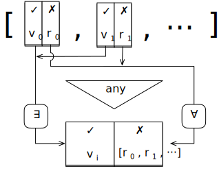

Въведение
ECMAScript е стандартът, на който JavaScript се базира, и обикновено се използва с абревиатурата ES. Относно произхода на името, Ecma International е швейцарска организация, която се занимава с дефиниране на международни стандарти. ECMA-262 е стандарт създаден от ECMA International и съдържа спецификацията за скриптов език ECMAScript. JavaScript основно имплементира ECMAScript спецификацията, описана в ECMA-262, но съществуват и разлики между тях. [2]
Освен JavaScript и други езици имплементират ECMAScript, включително:
- ActionScript (Flash скриптов език), който губи популярност, откакто Flash ще бъде прекратен през 2020
- Jscript (Microsoft скриптов диалект), когато JavaScript е бил поддържан само от Netscape и войните между браузърите са стигнали своя пик, Microsoft е трябвало да създадат своя собствена версия за Internet Explorer
Но въпреки това JavaScript е най-известната и широко използвана имплементация на ES. [1]
Новости във версиите ECMAScript 2016+
Следните характеристики са добавени в ECMAScript 2016:
-
Array.prototype.includes() – проверява дали масив съдържа дадена стойност. Връща true, ако масивът има елемент, чиято стойност е подаденият на функцията елемент searchElement и false в противен случай. Търсенето започва от индекс fromIndex: [3]
.includes(searchElement: T, fromIndex=0): boolean[0, 1, 2].includes(1) // резултат true [0, 1, 2].includes(5) // резултат false -
Експоненциалния оператор (**) – повдигане на степен: [3]
> 4 ** 2 16
Следните характеристики са добавени в ECMAScript 2017:
-
Async функциите (async/await) позволяват да се използва синтаксис, който изглежда синхронен, за да се напише асинхронен код [3]
Да разгледаме следната async функция:
async function fetchJsonAsync(url) { try { const request = await fetch(url); // async; fetch връща Promise const text = await request.text(); // async return JSON.parse(text); // sync } catch (error) { assert.fail(error); } }Този код е еквивалентен на следния код, който използва Promise (обект, който представлява евентуалното завършване (или грешка) на асинхронна операция и неговата резултатна стойност):
function fetchJsonViaPromises(url) { return fetch(url) // async .then(request => request.text()) // async .then(text => JSON.parse(text)) // sync .catch(error => { assert.fail(error); }); }Няколко наблюдения относно асинхронната функция fetchJsonAsync(): [3]
- Асинхронните функции са означени с ключовата дума async
- В тялото на асинхронната функция се пише Promise базиран код все едно е синхронен. Само трябва да се добави await оператора всеки път, когато стойност е Promise. Този оператор паузира асинхронната функция и я пуска щом Promise е установен. Ако Promise е изпълнен, await връща получената стойност. Ако Promise е отказан, await хвърля стойност на отказ.
- Резултатът от асинхронна функция винаги е Promise. Всяка стойност, която е върната (имплицитно или експлицитно) се използва, за да изпълни Promise. Всеки exception, който е хвърлен, се използва, за да откаже Promise.
-
Object.values() връща масив със стойностите на всички изброими полета с ключ символен низ на даден обект [3]
const firstName = Symbol('firstName'); const obj = { [firstName]: 'Jane', lastName: 'Doe', }; console.log(Object.values(obj)); // резултат ['Doe'] -
Object.entries() връща масив с ключ символен низ на даден обект; всяка двойка се представя като двуелементен масив [3]
const firstName = Symbol('firstName'); const obj = { [firstName]: 'Jane', lastName: 'Doe', }; console.log(Object.entries(obj)); // резултат ['lastName', 'Doe'] -
Padding на символни низове: методите .padStart() и .padEnd() вмъкват padding текст [3]
> '7'.padStart(3, '0') '007' > 'yes'.padEnd(6, '!') 'yes!!!' -
Запетайка, след която няма подаден параметър, при извикване на методи и функции с параметри (trailing comma); създадена е за удобство при писане на код, за да не излиза грешка при изпусната запетайка [3]
// Деклариране function retrieveData( contentText, keyword, {unique, ignoreCase, pageSize}, // trailing comma ) { // ··· }// Извикване retrieveData( '', null, {ignoreCase: true, pageSize: 10}, // trailing comma );
Следните характеристики са добавени в ECMAScript 2018:
-
Асинхронна итерация е асинхронната версия на синхронна итерация. Базира се на Promise: [3]
- Със синхронни итеруеми можем да достъпим всичко. С асинхронни итеруеми трябва да използваме await преди да достъпим нещо.
- Със синхронни итеруеми можем да ползваме for-of цикли. С асинхронни итеруеми използваме for-await-of цикли.
const asyncIterable = syncToAsyncIterable(['a', 'b']); const asyncIterator = asyncIterable[Symbol.asyncIterator](); // Извиква се .next() докато .done е със стойност true: asyncIterator.next() .then(iteratorResult => { assert.deepEqual( iteratorResult, { value: 'a', done: false }); return asyncIterator.next(); }) .then(iteratorResult => { assert.deepEqual( iteratorResult, { value: 'b', done: false }); return asyncIterator.next(); }) .then(iteratorResult => { assert.deepEqual( iteratorResult, { value: undefined, done: true }); }) ; -
Spread оператор за литерали на обекти: с неговото използване в литерал на обект можем да копираме полетата на друг обект в текущия. Случай, в който може да се използва, е да се създаде копие на обект, но не в дълбочина: [3]
> const obj = {one: 1, two: 2}; > {...obj, three: 3} { one: 1, two: 2, three: 3 } const obj1 = {one: 1, two: 2}; const obj2 = {three: 3}; assert.deepEqual( {...obj1, ...obj2, four: 4}, {one: 1, two: 2, three: 3, four: 4} ); -
Rest синтаксисът (деструктиране) може да се използва за вземане на всички полета на обект, които не са споменати преди това [3]
const obj = { a: 1, b: 2, c: 3 }; const { a: propValue, ...remaining } = obj; assert.equal(propValue, 1); assert.deepEqual(remaining, {b:2, c:3}); -
Promise.prototype.finally() се свързва с клаузата finally от try-catch-finally израза – подобно както Promise методът .then() се свързва с try клаузата и .catch() се свързва с catch клаузата; тоест функцията, подадена на .finally(), се изпълнява независимо от това дали Promise е изпълнен, или отказан [3]
somePromise .then((result) => { // ··· }) .catch((error) => { // ··· }) .finally(() => { // ··· }); -
Нови характеристики за регулярните изрази: [3]
-
Освен достъпването на групи по номер, вече могат да бъдат именувани и да се достъпват по име
const matchObj = '---756---'.match(/(?<digits>[0-9]+)/) assert.equal(matchObj.groups.digits, '756'); -
Проверки за предшестващи символи:
> 'Xabc def'.match(/(?<=X)[a-z]+/g) [ 'abc' ] //връща това, което е предшествано от символа X > 'Xabc def'.match(/(?<!X)[a-z]+/g) [ 'bc', 'def' ] //връща това, което не е предшествано от символа X -
/s (dotAll) флаг за регулярни изрази – ако този флаг е активен, точката хваща разделителите за редове (по подразбиране не го прави)
> /./.test('\n') false > /./s.test('\n') true -
RegExp Unicode property escapes - дават много повече свобода, когато търсим съвпадения за Unicode code point:
> /^\p{Lowercase_Letter}+$/u.test('aüπ') true > /^\p{White_Space}+$/u.test('\n \t') true > /^\p{Script=Greek}+$/u.test('ΩΔΨ') true
-
-
Template literal revision позволява текст с наклонени черти в “tagged” темплейти, което не е позволено в стринг литерали например: [3]
windowsPath`C:\uuu\xxx\111` latex`\unicode` assert.deepEqual( cookedRaw`\u{54}\u0065\x78t`, { cooked: ['Text'], raw: ['\\u{54}\\u0065\\x78t'], substitutions: [], });
Следните характеристики са добавени в ECMAScript 2019:
-
Методът за масиви .flatMap() работи като .map(), но позволява на callback-a да върне масив от 0 или повече стойности вместо само една стойност. Върнатите масиви са след това конкатенирани и се превръщат в резултат на .flatMap(). Случаите, в които се използва са: [3]
- Филтриране и мапване по едно и също време
- Мапване на единична входна стойност до множество изходни стойности
.flatMap<U>( callback: (value: T, index: number, array: T[]) => U|Array<U>, thisValue?: any ): U[]> ['a', 'b', 'c'].flatMap(x => [x,x]) [ 'a', 'a', 'b', 'b', 'c', 'c' ] > ['a', 'b', 'c'].flatMap(x => [x]) [ 'a', 'b', 'c' ] > ['a', 'b', 'c'].flatMap(x => []) []
Методът за масиви .flat() преобразува вложени масиви в прави масиви (flat). Опционално може да се укаже на каква дълбочина на вложеност да спре процесът. “Flattens” масив: влиза надълбоко в масивите, които са вложени във входния масив, и създава копие, като всички стойности, които намери на ниво depth или по-ниско, са преместени на най-горно ниво: [3]
.flat(depth = 1): any[]
> [ 1,2, [3,4], [[5,6]] ].flat(0) // без промяна
[ 1, 2, [3,4], [[5,6]] ]
> [ 1,2, [3,4], [[5,6]] ].flat(1)
[1, 2, 3, 4, [5,6]]
> [ 1,2, [3,4], [[5,6]] ].flat(2)
[1, 2, 3, 4, 5, 6]
Object.fromEntries() създава обект от итеруеми сред входните данни. Всеки входен елемент е двуелементен масив с елемент ключ и елемент стойност [3]
const symbolKey = Symbol('symbolKey');
assert.deepEqual(
Object.fromEntries(
[
['stringKey', 1],
[symbolKey, 2],
]
),
{
stringKey: 1,
[symbolKey]: 2,
}
);
Стринг методите .trimStart() и .trimEnd() работят както .trim(), но премахват whitespace (табулация, интервал) само в началото или само накрая на символен низ: [3]
.trimStart(): string
> ' abc '.trimStart()
'abc '
.trimEnd(): string
> ' abc '.trimEnd()
' abc'
Опционално използване catch binding – вече може да бъде пропуснат параметъра на catch клаузата, ако не го ползваме: [3]
try {
// ···
} catch {
// ···
}
Това понякога може да бъде полезно. Например Node.js има следната API функция assert.throws(func), която проверява дали е хвърлена грешка в func. Може да бъде имплементирана както следва:
function throws(func) {
try {
func();
} catch {
return; // everything OK
}
throw new Error('Function didn’t throw an exception!');
}
Symbol.prototype.description – е getter метод за четене на описанието на символ. Първоначално описанието е било включено в резултата на .toString(), но не е било възможно да бъде достъпвано индивидуално [3]
Параметърът, който подаваме на функцията, създаваща символ, осигурява описание за създадения символ:
const mySymbol = Symbol('mySymbol');
Описанието може да бъде достъпвано по два начина: Първо, то е част от символния низ, върнат от .toString():
assert.equal(mySymbol.toString(), 'Symbol(mySymbol)');
Второ, от ES2019 можем да извличаме описанието чрез пропъртито .description:
assert.equal(mySymbol.description, 'mySymbol');
JSON.stringify превръща JavaScript обект или стойност в JSON символен низ, опционално замествайки стойности, ако е подадена такава функция, или опционално включвайки само специфични пропъртита, ако е подаден такъв масив [3]
console.log(JSON.stringify({ x: 5, y: 6 }));
// очакван изход: "{"x":5,"y":6}"
console.log(JSON.stringify([new Number(3), new String('false'), new Boolean(false)]));
// очакван изход: "[3,"false",false]"
console.log(JSON.stringify({ x: [10, undefined, function(){}, Symbol('')] }));
// очакван изход: "{"x":[10,null,null,null]}"
console.log(JSON.stringify(new Date(2006, 0, 2, 15, 4, 5)));
// очакван изход: ""2006-01-02T15:04:05.000Z""
Function.prototype.toString() – метод, който връща символен низ, представляващ сорс кода на функцията [3]
function sum(a, b) {
return a + b;
}
console.log(sum.toString());
// очакван изход: "function sum(a, b) {
// return a + b;
// }"
console.log(Math.abs.toString());
// очакван изход: "function abs() { [native code] }"
Следните характеристики са добавени в ECMAScript 2020:
-
Динамични импорти чрез import(): обикновеният import израз е статичен: може само да го ползваме на горните нива на модули и неговият модулен спецификатор е фиксиран символен низ. import() променя това. Той може да бъде ползван навсякъде (включително условни изрази) и можем да пресметнем неговия аргумент: [3]
import(moduleSpecifierStr) .then((namespaceObject) => { console.log(namespaceObject.namedExport); });import() е дори много по-удобен за използване чрез await:
const namespaceObject = await import(moduleSpecifierStr); console.log(namespaceObject.namedExport); -
import.meta съдържа метаданни за текущия модул. Неговото първо най-широко поддържано пропърти е import.meta.url, който съдържа символен низ с URL на файла на текущия модул. Например: [3]
'https://example.com/code/main.mjs' -
Namespace re-exporting: следващият израз импортва всички експорти на модула mod в namespace обект ns и експортира този обект: [3]
export * as ns from 'mod'; -
Опционално верижно свързване за достъп до пропъртита и извикване на методи. Например: [3]
value.?propТози израз се оценява на undefined, ако value е или undefined, или null. В противен случай се приема стойността на value.prop. Тази функционалност е особено полезна във вериги от пропъртита, когато някои от тях може да липсват
-
Nullish coalescing operator (??): [3]
value ?? defaultValueТози израз приема стойност defaultValue, ако value е или undefined, или null и е value в противен случай. Този оператор позволява да ползваме стойност по подразбиране, когато нещо липсва.
Първоначално е бил използван логическият „или“ оператор (||) в такива случаи, но той си има своите недостатъци, защото връща стойността по подразбиране, когато лявата част има falsy стойност (което не винаги е коректно)
- Bigints: нов тип примитивни данни; поддържа цели числа, които могат да бъдат произволно големи [3]
-
String.prototype.matchAll(): при този метод се дава грешка, ако флагът /g не е сложен, и връща iterable с всички съвпадения за даден символен низ: [3]
В следващия пример използваме Array.from(), за да преобразуваме iterables към масиви, за да ги сравняваме по-лесно:
> Array.from('-a-a-a'.matchAll(/-(a)/ug)) [ { 0:'-a', 1:'a', index: 0, input: '-a-a-a', groups: undefined }, { 0:'-a', 1:'a', index: 2, input: '-a-a-a', groups: undefined }, { 0:'-a', 1:'a', index: 4, input: '-a-a-a', groups: undefined }, ] -
Promise.allSettled() получава iterable от Promise. Връща Promise, който е изпълнен въднъж, когато входните Promise са установени. Върнатата стойност е масив с един обект на входен Promise – един от двата: [3]
-
{ status: 'fulfilled', value: «fulfillment value» } -
{ status: 'rejected', reason: «rejection value» }
Promise.allSettled<T>(promises: Iterable<Promise<T>>) : Promise<Array<SettlementObject<T>>> type SettlementObject<T> = FulfillmentObject<T> | RejectionObject; interface FulfillmentObject<T> { status: 'fulfilled'; value: T; } interface RejectionObject { status: 'rejected'; reason: unknown; } -
- globalThis осигурява начин да се достъпи глобалния обект, който работи на браузъри и на server-side платформи като Node.js и Deno: [3]
Следните характеристики са добавени в ECMAScript 2021:
-
String.prototype.replaceAll() позволява да се заместят всички съвпадения на регулярен израз или символен низ (.replace() замества само първото срещане на символен низ): [3]
> 'abbbaab'.replaceAll('b', 'x') 'axxxaax' -
Promise.any() и AggregateError: Promise.any() връща Promise, който е изпълнен, щом първият Promise в iterable от Promise е изпълнен. Ако има само отказани, те са поставени в AggregateError, който става rejection стойността. Използваме Promise.any(), когато се интересуваме само от първият изпълнен Promise сред няколко. [3]
Promise.any<T>(promises: Iterable<Promise<T>>): Promise<T></T>Това е сигнатурата на типа на AggregateError (подклас на Error):
class AggregateError extends Error { errors: Array<any>; constructor( errors: Iterable<any>, message: string = '', options?: ErrorOptions // ES2022 ); } interface ErrorOptions { cause?: any; // ES2022 }Фигура, която показва как Promise.any() работи:
Фигура 1. Начин на работа на Promise.any()
-
Logical assignment оператори: [3]
a ||= b a &&= b a ??= b -
Долна черта (_) като разделител в: [3]
- Number literals: 123_456.789_012
- Bigint literals: 6_000_000_000_000_000_000_000_000n
ECMAScript 2022 ще стане стандарт през юни 2022. Следните предложения са стигнали етап 4 и са предвидени да станат част от този стандарт:
-
Нови членове на класове [3]
-
Пропъртита (публични) могат вече да се създадат чрез:
Instance public fields:
Инстанции на следния клас имат две instance пропъртита (създадени на ред A и ред B):
class InstPublicClass { // Instance public field instancePublicField = 0; // (A) constructor(value) { // We don’t need to mention .property elsewhere! this.property = value; // (B) } } const inst = new InstPublicClass('constrArg'); assert.deepEqual( Reflect.ownKeys(inst), ['instancePublicField', 'property'] ); assert.equal( inst.instancePublicField, 0 ); assert.equal( inst.property, 'constrArg' );Ако създадем instance property в конструктора (ред B), няма нужда да го декларираме никъде.
Static public fields:
const computedFieldKey = Symbol('computedFieldKey'); class StaticPublicFieldClass { static identifierFieldKey = 1; static 'quoted field key' = 2; static [computedFieldKey] = 3; } assert.deepEqual( Reflect.ownKeys(StaticPublicFieldClass), [ 'length', // number of constructor parameters 'name', // 'StaticPublicFieldClass' 'prototype', 'identifierFieldKey', 'quoted field key', computedFieldKey, ], ); assert.equal(StaticPublicFieldClass.identifierFieldKey, 1); assert.equal(StaticPublicFieldClass['quoted field key'], 2); assert.equal(StaticPublicFieldClass[computedFieldKey], 3); -
Статични инициализиращи блокове – изпълняват се, когато класът е създаден (ред A):
class Translator { static translations = { yes: 'ja', no: 'nein', maybe: 'vielleicht', }; static englishWords = []; static germanWords = []; static { // (A) for (const [english, german] of Object.entries(this.translations)) { this.englishWords.push(english); this.germanWords.push(german); } } }
-
-
Private slot checks: следният израз проверява дали obj има private слот #privateSlot: [3]
#privateSlot in objin операторът може да се използва за проверка дали private слот съществува (ред A):
class Color { #name; constructor(name) { this.#name = name; } static check(obj) { return #name in obj; // (A) } }Private методи: следният код показва, че private методите създават private слотове в инстанциите:
class C1 { #priv() {} static check(obj) { return #priv in obj; } } assert.equal(C1.check(new C1()), true); -
await на горно ниво в методи: вече може да бъде използван await на горни нива на модули и не е нужно да се пишат async функции повече: [3]
const params = new URLSearchParams(location.search); const language = params.get('lang'); const messages = await import(`./messages-${language}.mjs`); // (A) console.log(messages.welcome); -
error.cause: error и неговите подкласове позволяват да се специфицира кой error е предизвикал текущия: [3]
new Error('Something went wrong', {cause: otherError}) -
Методът .at() за индексируеми стойности позволяват да се чете елемент на определен индекс (като оператора []) и поддържа отрицателни индекси (за разлика от оператора []): [3]
> ['a', 'b', 'c'].at(0) 'a' > ['a', 'b', 'c'].at(-1) 'c'Следните “indexable” типове имат метода .at():
- string
- Array
- всички Typed Array класове: Uint8Array etc.
-
RegExp match indices: ако добавим флаг на регулярен израз, използването му създава match обекти, които записват началния и крайния индекс на всяка съвпаднала група [3]
Така се достъпват съвпаденията на номерирани групи:
const matchObj = /(a+)(b+)/d.exec('aaaabb'); assert.equal( matchObj[1], 'aaaa' ); assert.equal( matchObj[2], 'bb' );Заради използването на флага /d, matchObj също има пропърти .indices, което записва за всяка група къде е било съвпадението във входния символен низ
assert.deepEqual( matchObj.indices[1], [0, 4] ); assert.deepEqual( matchObj.indices[2], [4, 6] );Достъпване на съвпаденията на именувани групи:
const matchObj = /(?<as>a+)(?<bs>b+)/d.exec('aaaabb'); assert.equal( matchObj.groups.as, 'aaaa'); assert.equal( matchObj.groups.bs, 'bb'); - Object.hasOwn(obj, propKey) осигурява сигурен начин за проверка дали обект obj има свое собствено пропърти с ключа propKey. В сравнение с Object.prototype.hasOwnProperty, методът работи с всички обекти: